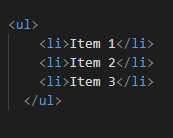
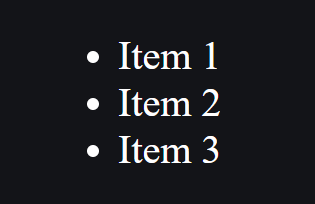
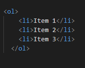
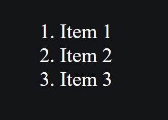

Что такое HTML списки?
HTML списки - это элементы, которые используются для организации и представления набора элементов в виде списка. Они могут быть использованы для организации меню, навигации, панели инструментов, маркированных и нумерованных списков и т.д.
Какие списки бывают?
Существует два основных типа списков в HTML: маркированный список (ul) и нумерованный список (ol). Каждый тип содержит отдельные элементы списка, которые называются элементами списка (li).
Маркированный список
Маркированный список (ul) используется для создания списка с маркерами, такими как кружочки или другие иконки. Элементы списка могут быть ненумерованными и не иметь специального порядка. Создать маркированный список можно с помощью тега <ul>, который обозначает "unordered list", и тега <li>, который обозначает "list item". Например:
Отображение в браузере:
Нумерованный список
Нумерованный список (ol) используется для создания списка с нумерованными элементами. Этот тип списка используется, когда элементы списка должны быть представлены в определенном порядке. Создать нумерованный список можно с помощью тега <ol>, который обозначает "ordered list", и тега <li>. Например:
Отображение в браузере:
Кроме этих двух основных типов списков в HTML, существует еще несколько других типов, такие как определенные термины (dl), меню (menu) и команды (command). Они менее популярны и используются в основном для специализированных целей.
Cписки в HTML являются одним из основных элементов для организации и представления информации на веб-странице.Чтобы создать маркированный список, используйте тег <ul>, а чтобы создать нумерованный список - тег <ol>. Каждый элемент списка должен быть обернут в тег <li>. Использование списков в HTML может улучшить читабельность и доступность вашего веб-сайта и помочь вашим посетителям лучше ориентироваться на вашем сайте.
Задания
С помощью маркированного списка создайте список покупок, а с помощью нумерованного списка создайте расподрядок дня.